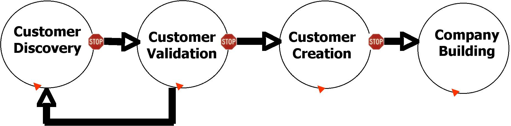
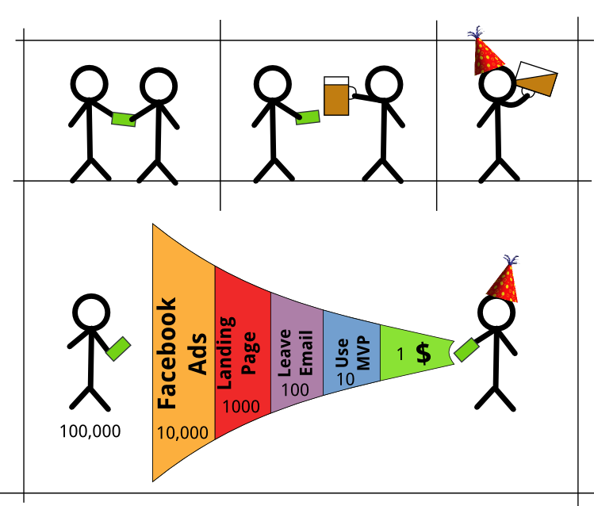
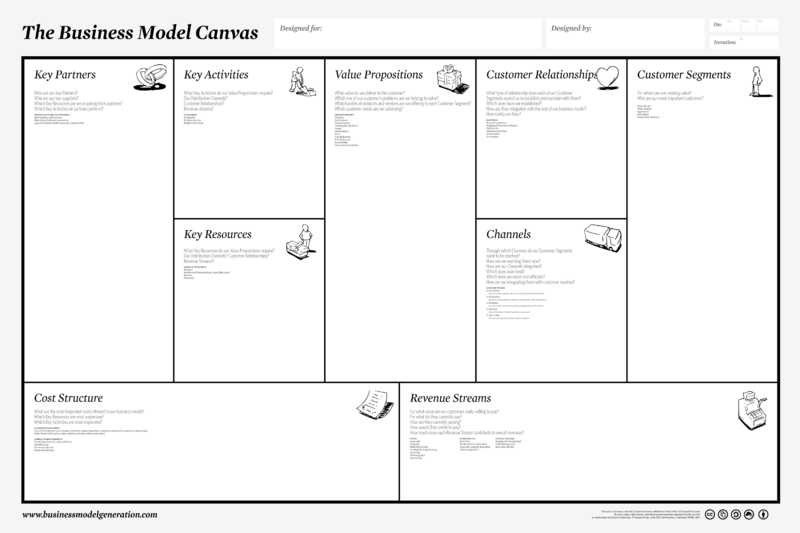
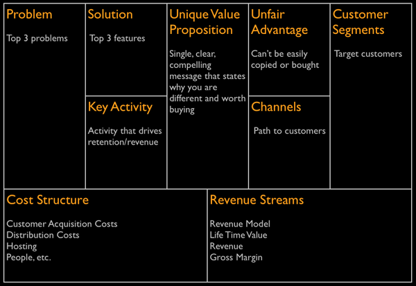
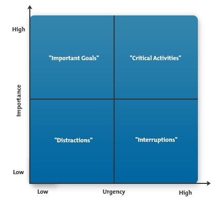

9 Tools to organize your work during the first weeks of your startup.
1.- Prioritize your Life
Your startup should be your priority, of course you'll have a lot of others things to do, but lets that just work in automatic.
- Set Big Rocks for the Week.
- Set 3 Most Important Tasks for the Day(Taken most probably from the Big Rocks).
- Do your MITs at the start of the day, even before checking your email.
If you fill a vase with sand (little rocks) and try to squis your big rocks after it, you'll not be able to do it, in the other hand if you put your big rocks first, then the sand will simply fill the empty space.
Source: ZTD Habit 3: Plan
2.- Marketing Funnel
There are big missunderstandings about what really is an startup and where should the efforst be headed, the reality is that everything should head towards the discovery of the customer-product match.


3.- Business Model Canvas/Lean Canvas


4.- Urgent Importance Matrix
A fast way to get everyone on the same page, and set everyone to work as soon as possible.
* Can be used as a base for the future Product Backlog
TodayIGoOut
Web App to CheckIn&Search(as in Foursquare) the events you like:
- Open the app in your cellphone and see your position in the map.
- See a list of events going up around you.
- Search in all the events in the system for the event you are looking for.
- CheckIn there.
- Leave a Comment.
- Leave a Picture.
- See the event in a Webpage with all the data.
Tasks:
- Design Logo and Corporate Image
- Choose Name
- Generate MailChimp Form
- Create TwitPoll for Landing Page
- Twitter Account
- Facebook Page
- Google+ Page
- Facebook ads
- Search for available patent
- Install server
- Design Landing Page
- Buy Domain
- Google Ads
- Interview with Clients
- Interview with Users
- Code Landing Page (for email subscription)
- Register Trademark
- Install Framework
- Create Database
- Code the CheckIn
- Code the Search
- Code the Map(with geolocation)
- Code Upload Picture
- Code Place Detail(in App)
- Code WebPage search for events
- Code WebPage events details
- Code Webpage to invite to download app
- Send Emails to leads to use MVP
5.- SCRUM Cycles
 SCRUM as other metodologies work in small cycles because it has several benefits.
SCRUM as other metodologies work in small cycles because it has several benefits.
- Daily Scrums provide near deadlines in a friendly and confident environment.
- 2 Weeks delivery cycles allows the team to focus on a fixed set of task witout the burden of a long project.
- Gather feedback faster, allowing the team to pivot easily based in hard data.
In one word, it's humanized.
6.- Product Backlog
- As a <role> I need <a feature> that provides <value>
- Estimation
- Return of Investment
- I.N.V.E.S.T. -> Independent, Negotiable, Valuable, Estimatable, Small, Testable.
7.- Poker Planning
A method to put everyone in the same page about the size of the tasks to be done, by voting with cards about the size of the tasks with a set of poker cards.
- It's called poker because as poker, you play it with cards and try to avoid to give tips to the others about what card you are playing.
- We use cards A(1), 2, 4, 8, J(16), Q(32), K(64) to assing time because humans are lousy estimators and something we say is going to take little bit more, is usually done in the double of time.
- Tasks usually have hidden complications, so exact times wouldn't cut it anyway.
- When voting, if there is someone that votes to high or to low, it's usually because he knows something the others not(maybe a not obvious software limitation for example), he explains it and then the team votes again.
- The not exact units ^(hrs|days|etc) used are later converted in time as the team starts to syncronize in estimations and work output.
8.- SCRUM Board
- Physical, always visible.
9.- Minifesto
- Fight for Pareto's law, look for the 20% of effort that will give you the 80% of results.
- Prioritize, minimalism isn't about not doing things but about focusing first in the important.
- Perfect is enemy of good, first do it, then do it right, then do it better.
- Kill the baby, don't be afraid of starting all over again. Fail soon, learn fast.
- Add value. Think constantly how you can help your team and position yourself in that field/skill.
- Basics, first. Follow always a top-down thinking starting by the best-practises of CS.
- Think different. Simple is harder than complex, which means you'll need to use your creativity.
- Synthesis is the key of communication. We have to write code for humans not machines.
- Keep it plane. Try to keep your designs with few layers of indirection.
- Clean kippel and redundancy. Minimalism is all about removing distractions.
Source: MANIFESTO FOR MINIMALIST SOFTWARE ENGINEERS
Contacto
Correo: levhita@hackergarage.mx
Twitter: @Levhita
Facebook: Levhita
WebPage: HackerGarage.mx